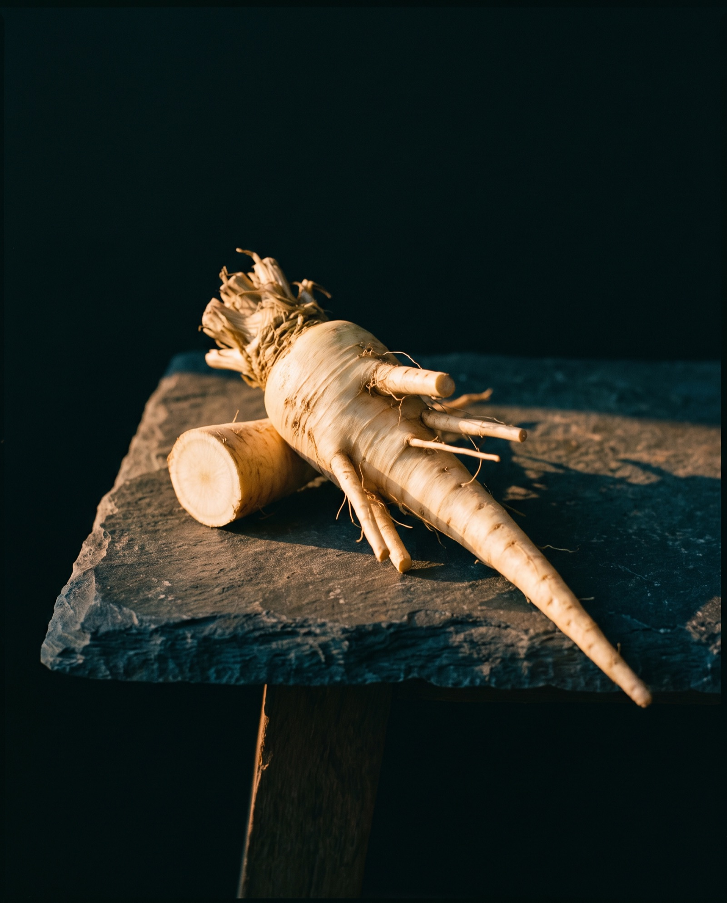
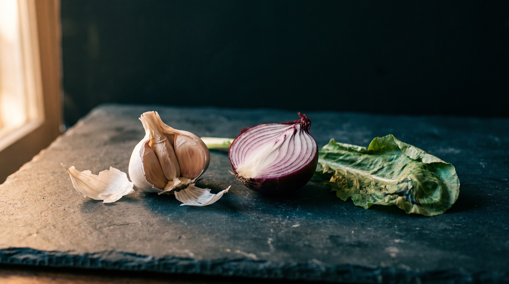
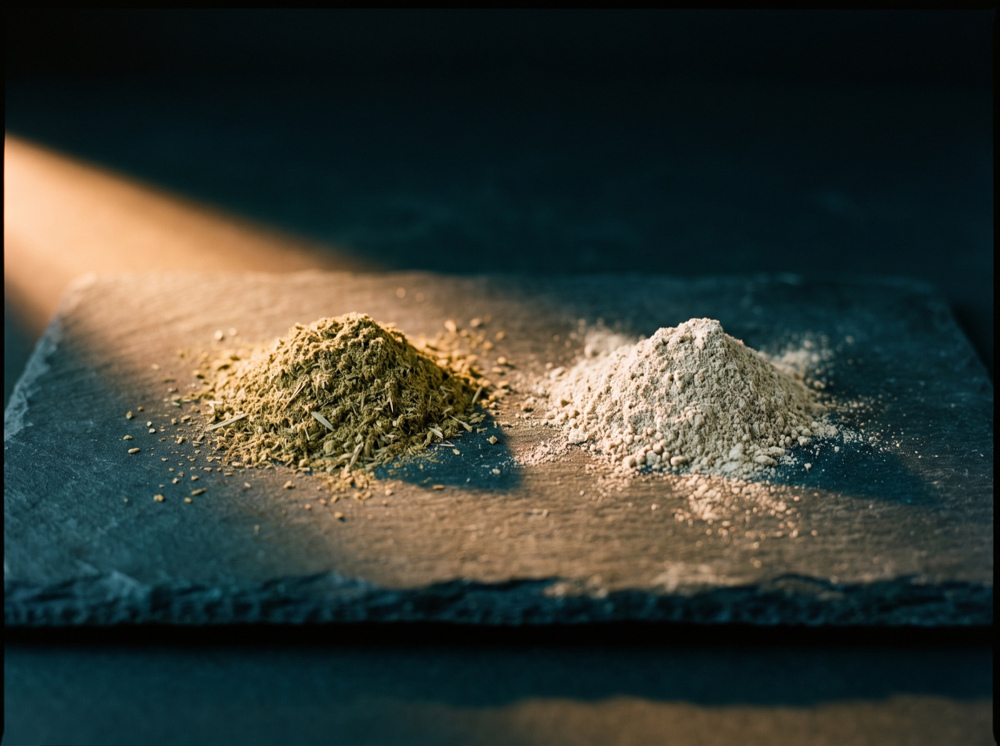
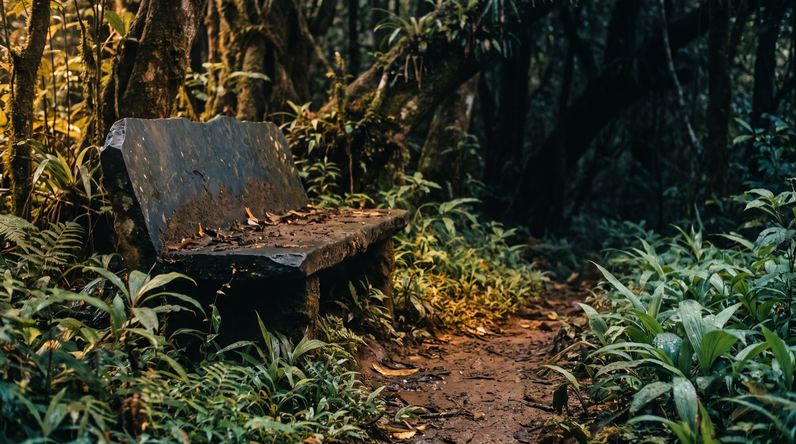

Anamu · Ingredient notes
Anamu, and why it smells like that
Petiveria alliacea smells of garlic and onion, and the smell does not stay in the pot. That is the first honest thing anybody should tell you about this plant, and almost nobody does. So: the plant, the sulphur chemistry underneath the smell, how to read a pack, and the long list of people we would not sell it to.
By Reiss Davies Ausar8 September 202611 minute read

A man came into the shop in March holding a pot of anamu capsules out in front of him, arm straight, the way you carry something that has gone off. He had bought them online, taken two with his lunch, and by four o'clock his wife had asked him what on earth he had been eating. He had eaten a cheese sandwich. What she could smell was the capsules.
Nobody had told him, and that is the part I mind. Anamu smells strongly of garlic and onion, the smell does not stay in the pot, it arrives on the breath a few hours behind the capsule, and taken every day for a fortnight it comes through in sweat as well. None of that is on the listing he bought it from, or on most of the others, so people find out at work, in a meeting, or across a kitchen table on a Sunday. A plant is going into a hueman body and the person selling it has decided not to mention what it does on the way back out. It all counts.
So that is where we start. We do sell anamu, it is on the shelf and it will stay there, and I would rather sell it to somebody who walked in already knowing.
01What it is
Anamu is Petiveria alliacea, a slender perennial herb of the Caribbean, Central America and tropical South America, and the species name gives the whole game away before you have opened anything. Alliacea means smelling of garlic. Whoever sat down to name this plant had plainly crushed a leaf between finger and thumb first, which is the only qualification that matters.
It sits in a small family called Petiveriaceae, split out of the pokeweeds, which is why older books file it under Phytolaccaceae.
The plant is unremarkable to look at, which is part of the problem, because nothing about the look of it warns you. It grows to about a metre on a thin stem that goes woody at the base, with oval pointed leaves running alternately up it in a plain mid green, nothing you would stop for. The flowers are small and greenish white on a long thin spike. The fruits carry backward-pointing barbs, and that is how this plant travels: on the leg of an animal, or the hem of your trousers, hitching a lift off whatever walks past.
It likes shade and disturbed ground. Forest margins, roadsides, the strip behind a house where nothing has been dug over in years. In Jamaica it is a plant of the gully, which is where one of its names comes from, and it has naturalised well past its original range, into parts of West Africa. Anything is anything, given favourable environmental conditions, and this one takes the conditions it is given.
The names change with the country. Anamú through the Spanish-speaking Caribbean and Central America. Guinea hen weed, and gully root, in Jamaica. Mucura in Peru and the western Amazon. Tipi in Brazil. Apacín in Guatemala. A listing that recites the whole row of them and tells you nothing else is a seller who copied a description rather than sourced a plant, and you can usually tell within a line or two which one you are reading.
Root and leaf are both traded and they are not the same material, which nobody writing a listing ever seems to notice. The root is a long pale taproot going woody with age, and the smell sits heaviest down in it, so cutting one open will fill a room and then stay in that room for an hour. The leaf is lighter in every sense, greener once it is milled, softer in the nose, cheaper by weight, because a plant puts out new leaves all season long and has only ever got the one root. Stem is neither of those. Stem is the cheapest way anybody has found to make a kilo weigh a kilo.

02Why it smells like that
This is chemistry, and I am going to keep it to chemistry, because chemistry is a thing you can check.
Cut an onion and what reaches you is not the smell of the intact onion, because the intact onion barely has one. Undamaged tissue keeps its sulphur locked up in larger, stable, odourless molecules in one compartment, while the enzymes that act on those molecules sit in another compartment entirely, the two kept apart the whole life of the plant. Break the tissue and you introduce them, and out of that introduction come small sulphur-bearing compounds light enough to evaporate at room temperature and walk straight up into your nose. That is why the smell arrives at the moment of the cut and never a second before it. Damage is the trigger, which tells you something about why a plant would bother building the mechanism at all.
Petiveria alliacea runs the same trick off different starting material. It sits nowhere near garlic and onion botanically, these lineages have been apart for a very long time, and they arrived at comparable chemistry on their own, separately, which is the sort of thing worth marinading on for a minute. Crush a fresh leaf between finger and thumb and the smell is there inside a second.

The compound named on our listing is dibenzyl trisulphide, and it is worth innerstanding what that actually is, because the name gets thrown around online as though it were a trademark somebody owns rather than a molecule anybody can draw. A benzyl group is a benzene ring with one carbon hung off it. Dibenzyl trisulphide is two of those joined by a chain of three sulphur atoms in a row, and that is the whole of the name: di, benzyl, tri, sulphide. Compounds built to that pattern turn up across the plants that smell of garlic, and the class is called the organic polysulphides.
What I am allowed to tell you about it is what it is, where it occurs and why you can smell it, and that last one is the interesting part. The nose picks up sulphur compounds of this kind far below the threshold it needs for most other classes of molecule, orders of magnitude below, which is why a small quantity of plant material throws a smell out of all proportion to itself. What it does once it is inside a person is not something I am going to write about, and section 04 sets out exactly why not.
WILD HERBS, HOW WE COMMUNICATE WITH EARTH
It is also what the man in the shop had found out the hard way, on a Friday, in front of his wife. Small volatile molecules leave by every route a body has, the breath and the skin included, and there is nothing mysterious or alarming in that: it is the same road garlic takes out of everybody who has ever eaten a good dinner. Anamu behaves the way garlic behaves, only more so and for longer. Better to know on the Sunday than on the Monday.
03How to tell a good pack from a bad one
People send us photographs of packs most weeks. Nearly everything wrong with a pack is visible on the back of it, assuming there is a back.
Whole herb or extract
Two different products sitting at the same shelf price. Whole herb is the plant dried, milled and put in a capsule, so 400 mg of it is 400 mg of plant and the arithmetic ends there. An extract has been through a solvent and concentrated, and it should carry a ratio, 4:1 or 10:1, meaning the weight of raw herb that went in for each unit that came back out. A listing that says extract and prints no ratio has told you nothing at all, and plenty of sellers use the word loosely when what they actually have is milled powder.
Which part of the plant
Root, leaf, stem, or aerial parts, which is the trade term for everything above ground. A good label says which one. A label that says herb and stops is at least owning up to the whole plant. A label that says nothing is usually sat on top of whatever was cheapest that month. Ask them. Anybody who bought the material properly can answer that in one line, and the ones who cannot will send you three paragraphs.
What else is in the capsule
Rice flour, maltodextrin and cellulose bulk a capsule out so that a small amount of herb still fills the shell. Magnesium stearate and silicon dioxide are flow agents, in there so the powder runs through the filling machine cleanly rather than sticking to the metal. None of that is sinister, all of it has to be declared, and every one of them is taking up room that could have held the plant you paid for, because a capsule holds a fixed volume and that volume does not grow to be generous. A pack listing three of them ahead of the herb has printed its own proportions for you. The shell is either gelatin, which comes off an animal, or HPMC, which comes from plant cellulose and is what a vegan capsule means. Ours are vegan capsules.
The species, and where it grew
The Latin binomial belongs on the pack, Petiveria alliacea, spelled properly. A pack that only says Guinea Hen Weed is leaning on a common name, and common names get passed between unrelated plants in every trade there has ever been. Country of origin belongs on there too. Ours is grown in the Caribbean and South America.
Our own pack says 100 per cent Petiveria alliacea in a vegan capsule and nothing else. It does not print which part of the plant, which by the standard I have just set out is a gap, and it is mine. I would rather write that down here than let you assume.

04What is in it, and what I am allowed to say about that
Here is the honest position, and it is shorter than you are expecting.
We run a food business in England. The only health claims we may make are the ones on the Great Britain register, they attach to a named nutrient rather than to a plant, they require us to show the product holds enough of that nutrient to qualify, and every claim ever submitted for a botanical has been parked on a list and left there for over a decade. Anamu carries no nutrient at a level I could print a figure for and hang a register claim on. That is the position, and it is the same position for the man selling the same plant three streets over, whatever his website says.
So what am I allowed to tell you about what anamu does inside a body. Nothing. Not a hedged version, not a traditionally used version, not a customers tell us version with a footnote hanging off the bottom of it. Nothing at all.
I will go further on this page than on the others, because this plant has earned it. Anamu carries more illegal marketing behind it than anything else on our shelf. Search the name and you will meet claims that in this country are an offence under the Human Medicines Regulations 2012 from the moment they are published, and a smaller number that are an offence under section 4 of the Cancer Act 1939, prosecuted by Trading Standards rather than argued out politely with an advertising body.
I am not going to repeat one of them, not even to knock it over, because repeating a claim is one of the ways of making it and I am not doing somebody else's marketing for free. The sheer volume of it should be making you cautious rather than curious. A plant that needs that much said about it is being sold on the saying and not on the plant.
What I can hand you instead is the specification. It is Petiveria alliacea, harvested in the Caribbean and South America, it smells the way I have spent two sections describing, and there are 50 vegan capsules in the pot at £29.99. The rest of it is yours to find out and yours to describe, and that is not me being coy, that is the whole arrangement.
05How it is taken
The dose exactly as the pot prints it. Take one to two capsules daily with a meal and 500 ml of spring water.
With a meal matters, and so does the water. Five hundred millilitres is a pint and a bit, which is more than anybody pictures when they read it, and nearly every customer who has told me a capsule sat heavily on them turns out to have taken it with a mouthful. Water activates the herbs. Give it the full glass.
The pot says with a meal and it does not say which meal, so here is what I would do. Take it with dinner. Very little happens on the way down, because a capsule shell exists precisely so that nothing does, but there is a garlic note on the burp about ten minutes later and the breath itself arrives some hours behind that. Taken in the evening, the loudest part of the timing lands while you are asleep.
Keep at it daily for a couple of weeks and expect it in sweat as well. Not enough to clear a room. Enough that somebody sat next to you on the train notices something and cannot place it.
Store it dry, lid on, out of the light, and nowhere near anything you would rather did not smell of garlic. That includes tea.

06Who should not take it
This is the longest section on this page, and longer than the same section anywhere else on this site, because anamu warrants more care than most of what we sell. Read it slowly.
- Pregnancy. This is the headline. Do not take anamu if you are pregnant, if you are trying to conceive, or if there is any real chance you might be. Do not take it while you are breastfeeding. That is not a hedge, there is no dose at which I would say otherwise across the counter, and it is the one line here I would ask you not to read past.
- Anyone on prescribed medication. Anything you take daily, anything for something ongoing, anything at all. Speak to your GP or your pharmacist first, and take the pot in with you so they can read the label rather than work from your description of it. I am not going to invent a mechanism to explain why, because I cannot source one I would be willing to print, and a made-up mechanism is worse than none. If a medicine matters enough to have been prescribed, it matters enough to check before you add anything alongside it.
- Anyone due surgery. Stop in good time before the date and tell your surgical team, along with everything else you take. Ask how far in advance they want it stopped, because they will have a rule and it is not the same everywhere. A team going into an operation needs the complete list.
- Anyone on anticoagulant or antiplatelet medication, or anyone told they bruise or bleed more easily than most. Ask first. Same honesty as above: I will not hand you a mechanism, I will tell you to ask somebody with your notes in front of them.
- Anyone being treated for anything at all. Ask before you start, and do not stop something you have been prescribed in order to take this instead. That happens, and it is the thing about selling this plant that worries me most.
- Children. No. Keep it up high with everything else in that cupboard.
- Anyone who has reacted badly to it before. If it did not suit you, it still does not.
- Anyone who works in close quarters with other people. Not a safety matter, but it is real, and I would rather raise it than have you discover it in a meeting.
If you are in any doubt at all, do not take it, and come and ask. None of this is medical advice and I am not qualified to give any. It is the set of questions I put to somebody across the counter before this particular pot goes into a bag, and you have now been asked all of them.
07Where to get it
Anamu, Petiveria alliacea, 50 vegan capsules, £29.99, on the Anamu page.
If you would rather talk it through first, the shop is at 599 Smithdown Road, Tuesday to Sunday. I will not be offended if you walk back out without it. Half the point of standing behind a counter is being able to say no to somebody.
Anamu is sold as a food supplement. Food supplements should not be used as a substitute for a varied and balanced diet and a healthy lifestyle. Keep out of reach of young children.

Reiss Davies Ausar
Founder and formulator at Herbase. Trading online since 2019 and behind the counter at 599 Smithdown Road, Liverpool, since August 2024. Author of three books on herbal practice. Book an hour with him if you want to go into more detail.